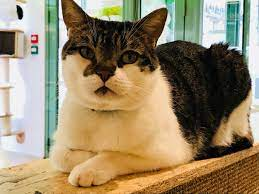
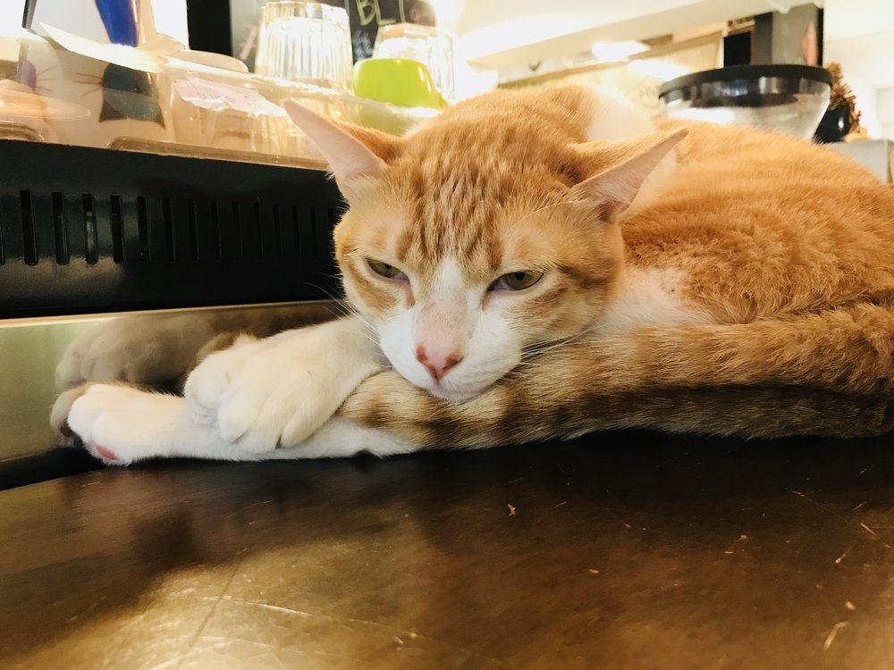
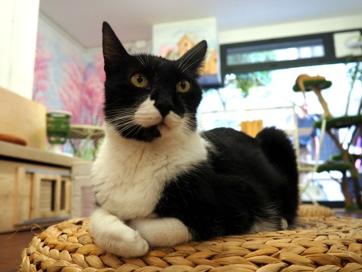

Pişik yırtıcı məməlilərin evdə saxlanılan növüdür. Felidae ailəsində yeganə evdə saxlanılan növdür və onu ailənin vəhşi üzvlərindən ayırmaq üçün çox vaxt ev pişiyi adlandırılır. Bir pişik ev pişiyi, bir ferma pişiyi və ya çöl pişiyi ola bilər.
Yerli pişiklər insanlar tərəfindən yoldaşlığı və gəmiricilər ovlamaq qabiliyyətinə görə qiymətləndirilir. Təxminən 60 pişik cinsi müxtəlif pişik xüsusiyyətləri tərəfindən tanınır. Pişik anatomiyada digər felid növlərə bənzəyir: güclü çevik bir bədənə, sürətli reflekslərə, iti dişlərə və kiçik yırtıcı kimi öldürmələrə uyğunlaşdırılmış geri çəkilə bilən qıvrımlara malikdir. Gecə görmə və qoxu hissi yaxşı inkişaf etmişdir.
  